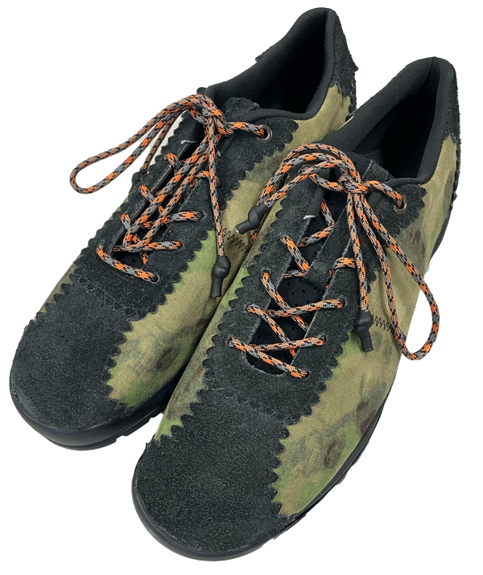
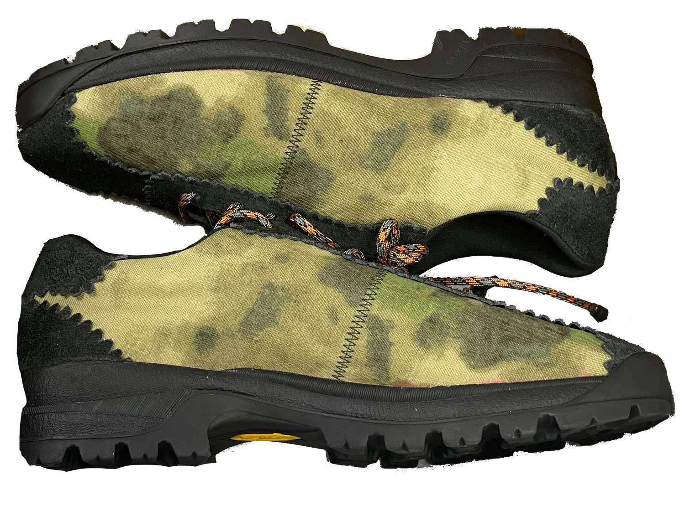
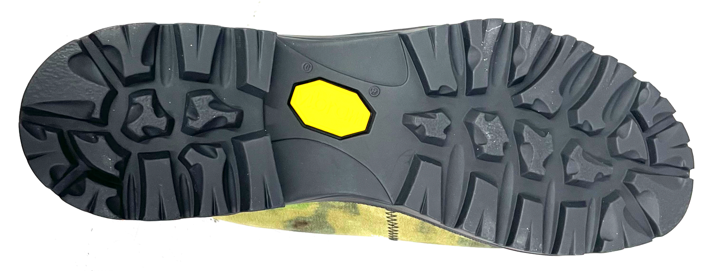
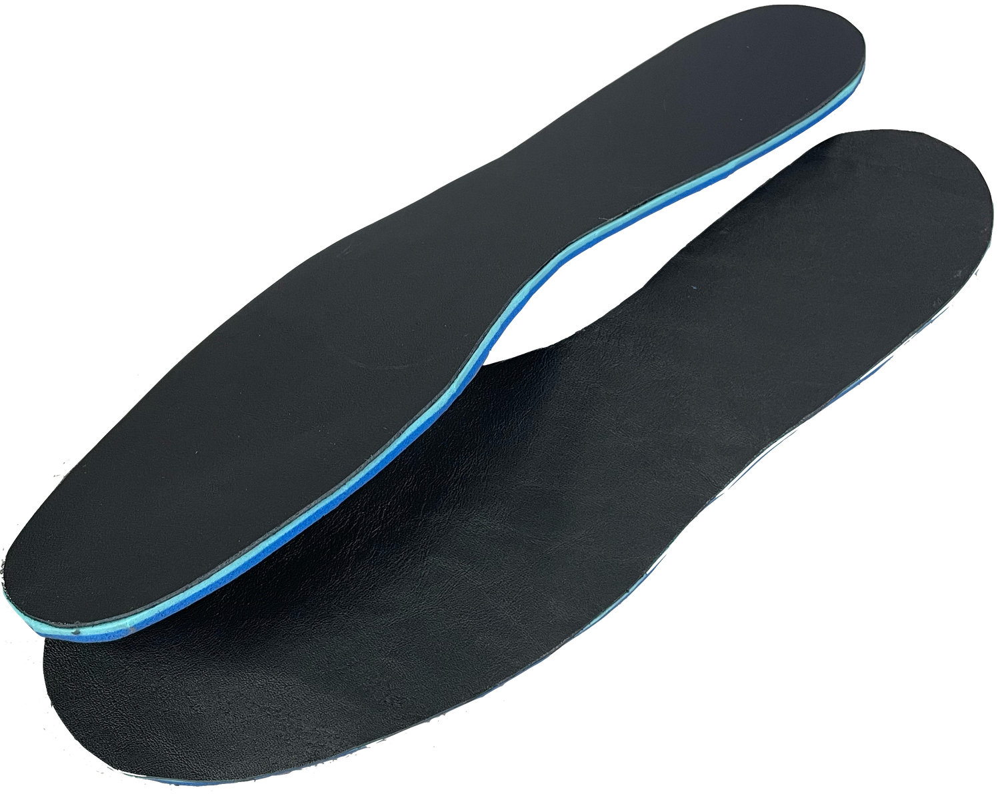
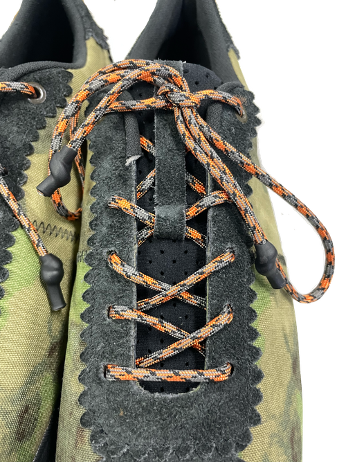
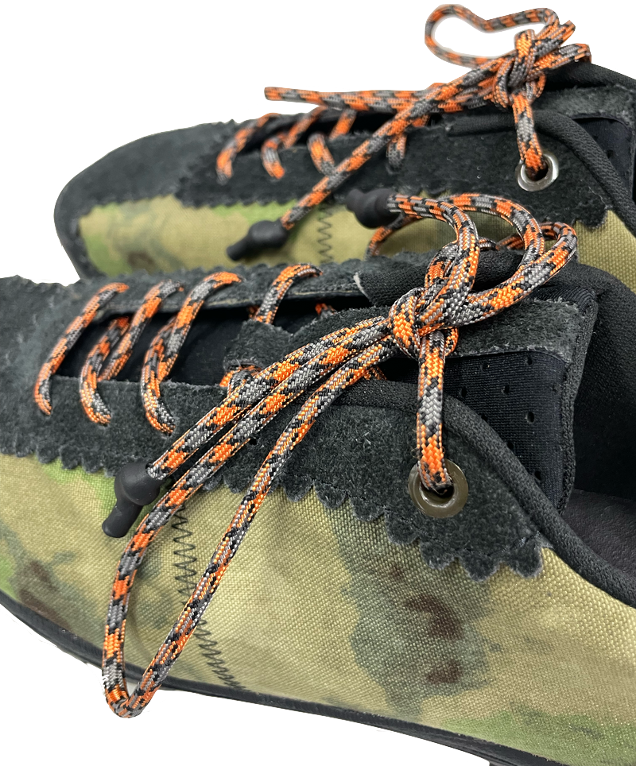

Hiker1
Custom-made footwear development
This RMIT showcase project blends modern “sportstyle” with a technical outsole for trail and urban use. I hand-drafted patterns, stitched the uppers, and hand-lasted the build for ergonomic alignment. The result is a performance-driven piece featuring water-repellent roughout suede for durability.






Hiker1
Custom-made footwear
- Upper
- Cordura 500D, Roughout Suede
- Lining
- Pigskin, Polyester foam mesh
- Tongue
- Neoprene, polyester foam mesh
- Lacing
- Custom Paracord with rubber tip
- Insole
- Poron Dual Density with leather lining
- Patternmaking
- Cut and Sew
- Prototyping
- Sketching
- Hand Lasting
- Illustrator
- Photoshop
This project was developed as my final project for the RMIT Certificate IV in Custom Made Footwear and was featured in the end-of-year showcase. Inspired by the “sportstyle” movement, the design pairs a stylish, modern upper with an outsole sturdy enough to navigate both technical hiking trails and demanding urban landscapes. Every aspect of the project was handmade by me, I drafted the original patterns, hand-cut all materials, stitched the complex uppers, and lasted the shoe to my own specifications for optimal ergonomic alignment. The result is a fully functional, performance-driven piece featuring water-repellent properties, including a specialized treatment on the roughout suede to ensure durability in adverse conditions.